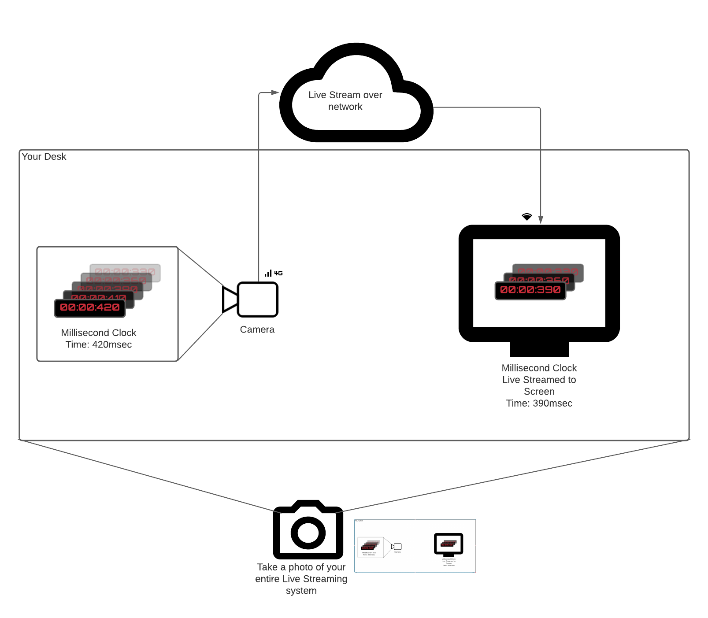
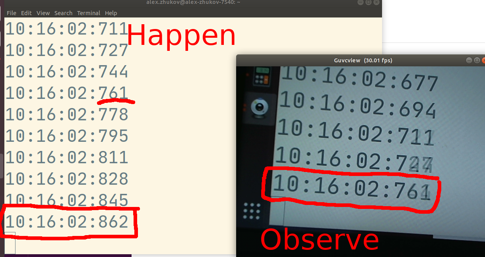
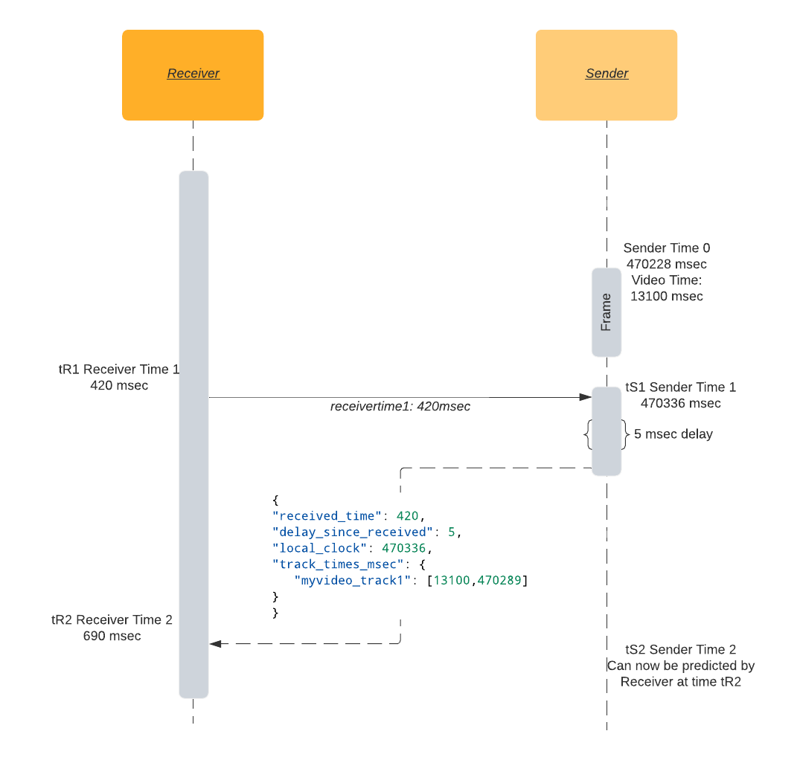

调试
调试 WebRTC 可能是一项艰巨的任务。有很多部分都处于运行状态，每一个部分都可能出现问题。如果你不够细心，可能会浪费数周的时间来查看错误的模块。当你最终找到出错的部分时，你还需要学习一些知识才能理解问题的根源。
本章将带你学习 WebRTC 的调试。它将向你展示如何分析并定位相关问题。确定问题后，我们将快速介绍一下流行的调试工具。
分解问题
开始调试时，你需要先分解问题的源头。从以下题目开始：
信令故障
网络故障
使用 netcat 测试你的 STUN 服务器：
-
准备 20 字节的绑定请求数据包：
echo -ne "\x00\x01\x00\x00\x21\x12\xA4\x42TESTTESTTEST" | hexdump -C 00000000 00 01 00 00 21 12 a4 42 54 45 53 54 54 45 53 54 |....!..BTESTTEST| 00000010 54 45 53 54 |TEST| 00000014解释： -
00 01是消息类型。 -00 00是数据段的长度。 -21 12 a4 42是 magic cookie。 -54 45 53 54 54 45 53 54 54 45 53 54（解码成 ASCII 就是TESTTESTTEST） 是 12 字节的 transaction ID。 -
发送请求并等待 32 字节的响应：
stunserver=stun1.l.google.com;stunport=19302;listenport=20000;echo -ne "\x00\x01\x00\x00\x21\x12\xA4\x42TESTTESTTEST" | nc -u -p $listenport $stunserver $stunport -w 1 | hexdump -C 00000000 01 01 00 0c 21 12 a4 42 54 45 53 54 54 45 53 54 |....!..BTESTTEST| 00000010 54 45 53 54 00 20 00 08 00 01 6f 32 7f 36 de 89 |TEST. ....o2.6..| 00000020解释： -
01 01是消息类型。 -00 0c是数据段的长度，解码后是十进制的 12。 -21 12 a4 42是 magic cookie。 -54 45 53 54 54 45 53 54 54 45 53 54（解码成 ASCII 就是TESTTESTTEST）是 12 字节的 transaction ID。 -00 20 00 08 00 01 6f 32 7f 36 de 89是 12 字节的数据，解释： -00 20是类型：XOR-MAPPED-ADDRESS。 -00 08是 value 段的长度，以十进制解码就是 8。 -00 01 6f 32 7f 36 de 89是数据值，解释： -00 01是地址类型（IPv4）。 -6f 32是经过 XOR 映射的端口。 -7f 36 de 89是经过 XOR 映射的 IP 地址。
解码 XOR 映射的部分很麻烦，但是我们可以通过提供设置为 00 00 00 00 的（无效）伪 magic cookie 来诱骗 stun 服务器执行伪 XOR 映射：
stunserver=stun1.l.google.com;stunport=19302;listenport=20000;echo -ne "\x00\x01\x00\x00\x00\x00\x00\x00TESTTESTTEST" | nc -u -p $listenport $stunserver $stunport -w 1 | hexdump -C
00000000 01 01 00 0c 00 00 00 00 54 45 53 54 54 45 53 54 |........TESTTEST|
00000010 54 45 53 54 00 01 00 08 00 01 4e 20 5e 24 7a cb |TEST......N ^$z.|
00000020
对伪 magic cookie 的 XOR 运算是幂等的，因此响应中的端口和地址将是清楚的。这并非在所有情况下都有效，因为某些路由器会操纵传递的数据包，伪装 IP 地址。如果我们查看返回的数据值（最后八个字节）：
00 01 4e 20 5e 24 7a cb是数据值，解释：00 01是地址类型（IPv4）。4e 20是映射的端口，解码成十进制就是 20000。5e 24 7a cb是 IP 地址，解码成点分十进制表示法就是94.36.122.203。
安全故障
媒体故障
数据故障
用到的工具
netcat (nc)
netcat 是用于使用 TCP 或 UDP 读取和写入网络连接的命令行网络实用程序。通常它可以用 nc 命令来调用。
tcpdump
tcpdump是一个命令行数据网络数据包分析器。
常用命令： - 捕获与端口 19302 之间的 UDP 数据包，并打印数据包内容的十六进制转储：
`sudo tcpdump 'udp port 19302' -xx`
-
与上一条相同，但将数据包保存在 PCAP（数据包捕获）文件中以供以后检查
sudo tcpdump 'udp port 19302' -w stun.pcap
可以使用 wireshark GUI 打开 PCAP 文件：wireshark stun.pcap
wireshark
wireshark 是一个使用广泛的网络协议分析器
webrtc-internals
Chrome 内置了一个 WebRTC 指标数据页面 chrome://webrtc-internals 。
延迟 (Latency)
我们该如何感知高延迟？你会注意到视频出现延迟了，但你知道它具体延迟了多少吗？ 想要降低延迟，你首先必须知道如何测量延迟。
真正的延迟应该是端到端测量的。这不仅仅是指发送方和接收方之间网络路径的延迟，还包括相机拍摄、帧编码、传输、接收、解码和视频播放等一系列步骤延迟的综合，以及这些步骤之间可能存在的队列。
端到端延迟不是各个组件延迟的简单叠加。
虽然在理论上，你可以单独测量整个视频传输管线中各个模块的延迟，然后累加到一起；但是在实践中，至少有些组件没有方法去测量延迟，或者在外部测量延迟的结果存在明显的偏差。 各个步骤之间的队列大小，网络拓扑，乃至是相机的曝光度变化，都可能会对分步骤的测量结果产生影响，进而影响端到端延迟的测量结果。
直播系统中每个组件内部的延迟都可能改变并影响下游组件。 甚至拍摄的内容也会影响延迟。 例如，与晴朗的蓝天这种低频图像相比，树枝等高频特征需要更多的比特数 (译者注：编码的本质是压缩，压缩的本质是减少数据冗余，复杂的图像编码后需要更多的空间)。 开启自动曝光的相机拍摄一帧图像所花费的时间，可能比预期的 33ms _ 多得多 _，即使拍摄速度设置为每秒 30 帧也是如此。 通过网络（特别是蜂窝网络）的传输，受需求变化的影响，也是动态变化的。 例如，更多的用户就意味着更多参与的通信者。 地理位置（特别是某些臭名昭著的低信号区）等其他因素也会增加丢包和延迟。 当你把数据包发送到网络接口（例如 WiFi 适配器或者 LTE）并请求传送时，会发生些什么呢？ 如果数据包无法被立即传送，它将被加入网络接口的队列中，队列越大，网络接口引入的延迟就越大。
端到端延迟——手动测量
当我们谈论 端到端延迟时，指的是从 事件发生 到 事件被看到 (即视频帧播放在屏幕上) 的时间间隔。
一个想当然的方法是，记录事件发生的时间，再与事件被看到的时间相减即可得到。 但是，当精确度为毫秒级时，时间同步就成了难题。 想要在分布式系统中同步时钟基本是徒劳的，即使是时钟同步的一个小错误，也会让 延迟测量 不再可信。
解决时间同步问题的一个简单方法，就是使用相同的时钟。 将发送方和接收方放在同一个参照系中。
想象一下你有一个正常运行的毫秒级时钟（或者其他真实的可以表示时间的物体）。
你要测量一个系统的延迟，这个系统中，摄像头对准 时钟，采集的直播流显示到同一个地方的另一个屏幕上。
有一个直接的测量方式来 测量 时钟当前时间 (Thappen) 和这个时钟视频出现在屏幕上的时间 (Tobserve) 。步骤如下：
- 将你的摄像头对准这个时钟。
- 将视频帧发送给同一个地方的接收方，接收端在屏幕上进行播放。
- （用你的手机）拍一张照片，将时钟和屏幕视频画面拍进同一个画面内。
- 将照片中的两个时间相减（时钟上的时间，和屏幕视频画面里时钟的时间）。
这是最真实的端到端延迟测量。 它考虑了所有组件（相机、编码器、网络、解码器）的延迟，并且不依赖任何时钟同步。
.  在上面的照片中，测得的端到端延迟为 101 msec。事件发生的时间是 10:16:02.862 , 而 直播观看者看到的时间是 10:16:02.761。
端到端延迟——自动测量
本文写作时（2021 年 5 月），WebRTC 标准中关于端到端延迟的话题正在被积极讨论中。 Firefox 实现了一套 API，让用户可以在标准 WebRTC API 之上，创建对延迟的自动测量。 不过，在本段落中，我们将讨论进行端到端延迟自动测量的最通用的方法。

Roundtrip，即往返时间，简而言之就是： 我向你发送我的时间 tR1, 当我接收到 tR1 回来时，时间是 tR2 ，可得往返时间是 tR2 - tR1 。
在给定发送方和接收方之间的通信通道（比如，DataChannel）后，接收方可以通过以下步骤来对发送方的单一时钟建模：
1. 在时间 tR1，接收方发送一个消息，包含它本地单一时钟的时间戳 tR1。
2. 在发送方一端的时间 tS1，发送方收到该消息，并发送响应消息，响应消息中包含三个时间：tR1 和 tS1，以及发送方的视频轨道时间 tSV1。
3. 在接收方一端的时间 tR2，接收方收到消息，可以用消息的接收时间减去发送时间，计算出往返时间：RTT = tR2 - tR1。
4. 有了往返时间 RTT 和发送方本地时间戳 tS1，就可以估算出发送方的单一时钟了。在 tR2 这个时间点，发送方的当前时间近似等于 tS1 加上往返时间 RTT 的一半。
5. 根据发送方本地时钟的时间戳 tS1，以及视频轨道的时间戳 tSV1，加上往返时间 RTT，接收方就可以将自己这一端和发送方一端的视频轨道时间进行同步。
现在我们已经知道了从发送方发出最后一个视频帧时间 tSV1 之后所经过的时间，我们可以这样计算近似的时间延迟，即用 期待的视频时间（'expected_video_time'） 减去 当前播放的视频帧的时间（'actual_video_time'）：
译者注：期待的视频时间指的是 没有时延的情况下应该播放到哪个时间，在 Sender 端，tSV1 时间采集 tSV1, 之后，过了 time_since(tSV1) 时间，Sender 端当前应该采集的是 tSV1 + time_since(tSV1)，无延迟情况下，期待的视频时间也就是 Sender 当前应该采集的时间。
这种方法的缺陷是没有包含相机内部的延迟。 大多数视频系统一般将相机的帧传送到主内存的时间作为这一帧的拍摄时间戳，但拍摄实际发生的时间会略早于此时间。
延迟测量示例
一个简单实现是在接收方开启一个 latency 数据通道，并定期将接收方的单一时钟时间戳发送到发送方。发送方响应一个 JSON 消息（消息中包含上面提到的三个时间），然后接收方根据这个消息来计算延迟。
{
"received_time": 64714, // Timestamp sent by receiver, sender reflects the timestamp.
"delay_since_received": 46, // Time elapsed since last `received_time` received on sender.
"local_clock": 1597366470336, // The sender's current monotonic clock time.
"track_times_msec": {
"myvideo_track1": [
13100, // Video frame RTP timestamp (in milliseconds).
1597366470289 // Video frame monotonic clock timestamp.
]
}
}
在接收方开启这个 latency 数据通道：
定期发送接收方的时间 tR1，示例中使用的周期是 2 秒：
发送方处理来自接收方的消息：
// Assuming event.data is a string like "1234567".
tR1 = event.data
now = Math.trunc(performance.now());
tSV1 = 42000; // Current frame RTP timestamp converted to millisecond timescale.
tS1 = 1597366470289; // Current frame monotonic clock timestamp.
msg = {
"received_time": tR1,
"delay_since_received": 0,
"local_clock": now,
"track_times_msec": {
"myvideo_track1": [tSV1, tS1]
}
}
dataChannel.send(JSON.stringify(msg));
接收方处理来自发送方的消息，并在控制台上打印估算的时延：
let tR2 = performance.now();
let fromSender = JSON.parse(event.data);
let tR1 = fromSender['received_time'];
let delay = fromSender['delay_since_received']; // How much time that has passed between the sender receiving and sending the response.
let senderTimeFromResponse = fromSender['local_clock'];
let rtt = tR2 - delay - tR1;
let networkLatency = rtt / 2;
let senderTime = (senderTimeFromResponse + delay + networkLatency);
VIDEO.requestVideoFrameCallback((now, framemeta) => {
// Estimate current time of the sender.
let delaySinceVideoCallbackRequested = now - tR2;
senderTime += delaySinceVideoCallbackRequested;
let [tSV1, tS1] = Object.entries(fromSender['track_times_msec'])[0][1]
let timeSinceLastKnownFrame = senderTime - tS1;
let expectedVideoTimeMsec = tSV1 + timeSinceLastKnownFrame;
let actualVideoTimeMsec = Math.trunc(framemeta.rtpTimestamp / 90); // Convert RTP timebase (90000) to millisecond timebase.
let latency = expectedVideoTimeMsec - actualVideoTimeMsec;
console.log('latency', latency, 'msec');
});
浏览器中的视频准确时间
<video>.requestVideoFrameCallback()允许 web 开发者在视频帧可以被合成图像时收到通知。
直到最近（2020 年 5 月），我们还基本没有一个可靠的方式在浏览器中获取视频当前播放帧的时间戳 。虽然存在一个基于 video.currentTime 的变通方法，但得到的结果也不是特别精确。
Chrome 和 Mozilla 的浏览器开发者都支持引入新的 W3C 标准，HTMLVideoElement.requestVideoFrameCallback()，该标准添加了一个 API 回调来访问当前视频帧的时间。
尽管这个新 API 听起来微不足道，但它赋予了应用在 Web 上进行音视频同步的能力，并已经促进了多个 Web 上的高级的媒体应用的实现。
特别是对于 WebRTC，回调中将包含 rtpTimestamp 字段，即与当前视频帧的关联的 RTP 时间戳。
这个接口理应出现在 WebRTC 应用中，可惜目前还没有。
延迟的调试技巧
由于调试很可能会影响测量到的延迟值，所以大体原则是：将你设置简化到能复现问题的最小程度。 移除越多的组件，就越容易找到造成延迟问题的组件。
相机延迟
根据相机设置，相机延迟可能会有所不同。 检查自动曝光、自动对焦和自动白平衡等设置。 网络摄像头的所有 " 自动 " 功能都需要一些额外的时间来分析捕获的图像，然后才能将其提供给 WebRTC 协议栈。
在 Linux 上，你可以使用 v4l2-ctl 命令行工具来控制相机设置：
# Disable autofocus:
v4l2-ctl -d /dev/video0 -c focus_auto=0
# Set focus to infinity:
v4l2-ctl -d /dev/video0 -c focus_absolute=0
你也可以使用图形界面工具 guvcview 来快速检测和调整相机设置。
编码延迟
大多数现代编码器会在输出已编码的帧之前，先缓存一些帧。 它们的首要任务是在生成的图片质量和比特率之间取得平衡。 多次编码器就是编码器忽略输出时延的一个极端例子。 在第一次编码过程中，编码器需要获取到完整的视频数据，然后才会开始输出视频帧。
不过，通过适当的调整，我们可以减少 sub-frame 的延迟（译者注：这里应该是指 subsequent-frame, 避免对后续帧的依赖）。
请确保你的编码器不使用过多的参考帧或依赖于 B 帧。
每个编解码器的延迟调整设置都不同，但对于 x264 而言，我们建议使用 tune=zerolatency 和 profile=baseline 以获得最低的帧输出延迟。
网络延迟
对于网络延迟，我们能做的不多，最好的方法就是升级到更好的网络连接。 网络延迟很像天气——你不能阻止下雨，但你可以查看天气预报然后打把雨伞。 WebRTC 以毫秒级精度测量网络状态。 重要的指标有： - 往返时间 - 丢包与包重传
往返时间
WebRTC 协议栈有内建的网络往返时间（round trip time, RTT）测量机制 。
网络延迟的一个很不错的近似值是 RTT/2。它假设发送和接收数据包需要同样长的时间，然而情况并非总是如此。
RTT 界定了端到端的时延的下限。
不管如何优化相机到编码器的处理管道，视频帧都无法在 RTT/2 的时间以内到达接收方。
内建的 RTT 机制，基于特殊的 RTCP 包，也就是发送方 / 接收方报告。 发送方发送自己的时间戳给接收方，接收方再将这个时间戳回传给发送方。 这样，发送方就知道这个数据包从发往接收方到返回一共花了多长时间。 RTT 测量的更多内容，请参阅发送方和接收方报告章节。
丢包与包重传
RTP 和 RTCP 协议都是基于 UDP，对于数据的顺序、成功送达或者避免重复，UDP 不提供任何保障。 而上面所有这些在现实世界的 WebRTC 应用中都会发生，也总是在发生。 一个简单的解码器实现会期望一个视频帧的所有数据包都被完整送达，以便解码器能重新生成图像。 出现丢包问题时，如果丢失的是P 帧的数据包，则可能会解码出错误的图像。 如果丢失的是 I 帧的数据包，则所有依赖于此 I 帧的视频帧要么出现严重的解码错误，要么压根无法被解码。 这些都很可能会造成视频 " 卡住 " 一段时间。
为了避免（当然只是尽量避免）视频卡住或者解码错误，WebRTC 使用 NACK（否定确认）。 当接收方没有收到一个期待的 RTP 包时，将返回 NACK 消息，让发送方再次发送这个丢失的包。 接收方 _ 等待 _ 数据包重传完成。 这样的重传会导致延迟增加。 NACK 包的发送和接收的数量会被记录在 WebRTC 内建的统计数据中，对应的字段是outbound stream nackCount和inbound stream nackCount 。
在webrtc internals 页面中，你可以看到展示入站和出站的 nackCount 的漂亮的图表。
如果你看到 nackCount 正在增加，这意味着网络正处于大量丢包的状态，尽管如此，WebRTC 协议栈仍在努力创建流畅的音视频体验。
当丢包率太高，解码器已经无法解码图像或者后续关联帧（例如 I 帧完全丢失的情况）的时候，所有后续的 P 帧都将无法解码。
在这种情况下，接收方将通过发送图片丢失指示（PLI）消息来尝试缓解问题。
一旦发送方接收到一个 PLI 消息，它将生成一个新的 I 帧来帮助接收方的解码器生成图像。
I 帧一般比 P 帧大，这也增加了需要传输的数据包数量。
和 NACK 消息一样，接收方需要等待新的 I 帧，这也引入了额外的延迟。
你需要关注webrtc internals 页面中的 pliCount 指标，如果它增加了，你需要调整编码器以减少数据包的输出；或者启用容错度更高的模式。
接收方一侧的延迟
延迟会受到数据包乱序到达的影响。 比如一张图片下半部分的数据包先到达了，那么必须等待上半部分的数据包到达后，才能开始解码。 关于这个问题的更详细内容，请参考解决抖动问题章节。
你也可以参考内建的jitterBufferDelay指标，看一下一帧需要在接收缓冲区中存放多久，才能等到所有的数据包接收完成，并被释放到解码器。